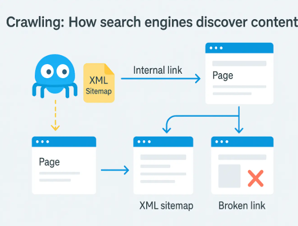

Importance of SEO
SEO stands for Search Engine Optimization, and it is used to improve the visibility of a website by improving search rankings. It is a bit similar to how hashtags in Social Media are used to categorize content. SEO is far more complex as it relies on relevance and popularity (MDN Web Docs, n.d.).
SEO involves three key components:
1. Technical - Semantics HTML helps crawlers index, search engines that scan and store web pages, get content you want (MDN Web Docs, n.d.).2. Copy-writing - Creating content with relevant keyword by using a mixture word and images so crawlers can understand the information.(MDN Web Docs, n.d.).
3. Popularity - Gaining the most traffic through backlinks from established sites get content you want (MDN Web Docs, n.d.).
In simple terms one can compare SEO to hashtags on popular social networks. But it is much more complex since it is relying on relevance and popularity. In order to get enough search results, a site has to meet certain content-related and technical requirements.
For example, Google search uses crawlers to explore and index web pages. By optimizing one's website it will be easier for Google to find it and index it. Simply by cheking if a website or not can ensure visibility of the website or not. (Google, n.d.).

Search engines and users can comprehend any information by using clear, descriptive URLs and structuring a website. Meaningful search results can help users with additional context. Using structured data might further enhance how one's website appears in search results, if you're up for the technological effort.
How to Use SEO Properly:
- Choose the right keywords: Site owners should use words their audience is likely to search for.
- Keep the site organized: Clear titles and headings help both users and search engines understand the content.
- Make the site mobile-friendly: A fast, responsive design improves the experience for visitors on any device.
- Earn links from other websites: When trustworthy sites link back, it increases the site's credibility and visibility.
- Use tools like Google Search Console: Submitting a sitemap helps search engines find and index the pages more effectively.